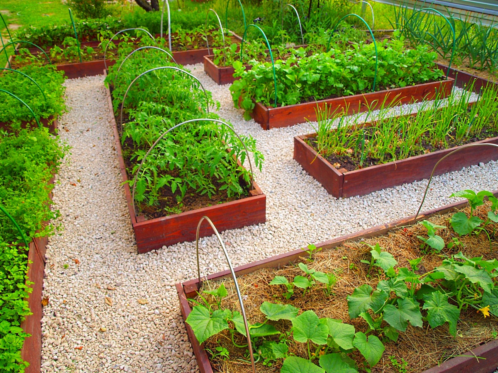

Огородные культуры. Названия огородных растений и плодов
этих
растений самые разнообразные. Насчитывается огромное множество видов,
разновидностей и
сортов. Вот некоторые из них: Корнеплоды: редис, репа, брюква, морковь,
картофель.
Листовые растения: салат, шпинат, щавель. Пряновкусовые: базилик, укроп,
сельдерей,
петрушка. Бахчевые: арбуз, дыня, тыква, кабачок, патиссон.
К садовым растениям относятся вишни, яблони, малина, смородина, клубника,
георгины, розы,
подснежники, лилии, барбарис, сирень, бархатцы, камнеломки, очитки, лилии,
тюльпаны,
аквилегия, клематисы, туя, можжевельник, ели, сосны, клены и еще очень многие
культурные
растения.

Вряд ли на свете найдется большое количество людей не
любящих
цветы. Но их выращивание дело не совсем простое. Правильная посадка, полив,
подкормка,
обрезка, защита от болезней ― вот далеко не полный перечень умений, которые
должен освоить
начинающий цветовод. Мы расскажем вам, как выращивать цветы и декоративные
растения в
домашних условиях, о тонкостях ухода за ними в открытом грунте, поделимся
интересными
дизайнерскими флористическими идеями и опытом маститых цветоводов.
Для оформления дизайна интерьера жилого помещения используют
комнатные растения. Цветы не только дополняют дизайн и украшают жилое помещение,
но и
обогащают воздух кислородом. Одни представители зеленого мира могут обладать
целебными
свойствами, другие могут применяться даже в кулинарии.Существует огромное
множество
комнатных цветов, которые можно разводить даже в наших широтах. Это и всем
известные
растения (например, Герань и Фиалка), так и более экзотические (например,
Ликуала и
Тилландсия).